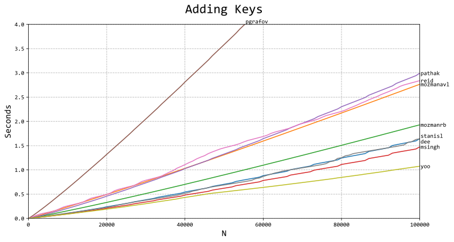
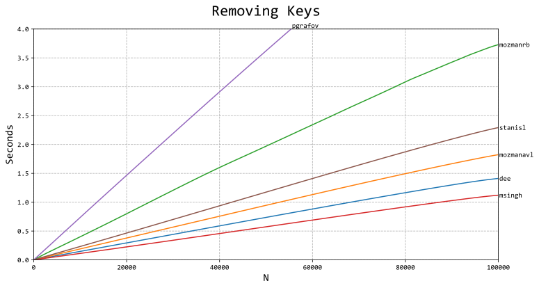

Self balancing binary search trees are data structures that allow us to add, remove, and find data
all in logarithmic time. They improve upon traditional binary search trees, which cannot be modified
once created.
In this article we present an implementation of the self balancing AVL tree in python, and compare
its performance with other implementations.
Implementation
The full implementation can be downloaded here: SBTree.py
And this is an example of using the tree:
from SBTree import SBTree
tree=SBTree(unique=False)
tree.add(6,"Friday")
tree.add(3,"Wednesday")
tree.add(1,"Monday")
tree.add(5,"REMOVE")
tree.add(2,"Tuesday")
tree.add(3,"Thursday")
tree.remove(5)
for n in tree:
print(str(n.key)+": "+str(n.value))
Our performance data is generated from speedtest.py in testing.zip using the python2 runtime. Our
own timing is denoted by "dee", with timings from various other authors denoted by their screen
names. Source code and project links can also be found in testing.zip. In the case that an
implementation didn't have searching or deletion, its timings were omitted from those tests. girish3
has been omitted entirely due to it timing out when adding keys.
Total time taken to add n keys:

We place slightly above average compared to other trees. msingh beats us by having a simpler
insertion loop with fewer rebalances due to it being a red-black tree. yoo beats us and msingh by
having the same rebalancing function as msingh and an even simpler insertion procedure.
Total time taken to remove n keys from a 100000 element tree:

Once again we place above average. msingh beats us by using a simpler search function to search for
the key being removed. This can also be seen in the search timings. It should be noted that many
implementations didn't include any way to remove keys.
Time to search for all keys in a 100000 node tree:
Name
Search Time
dee
0.876706 s
mozmanavl
0.297049 s
mozmanrb
0.296963 s
msingh
0.692859 s
pathak
N/A
pgrafov
0.546643 s
reid
1.343359 s
stanisl
1.327304 s
yoo
N/A
We perform poorly in this test. This is primarily because we have a complicated search function that
can perform more than equality matching and can handle duplicate keys.
Explanation
Binary trees are trees who's nodes have exactly 2 child nodes, although either child may be null. We
will denote the 2 child nodes as "left" and "right". In addition, each node will have a parent and a
height, with height being defined as max(left.height,right.height)+1. In this way, the height of a
node is actually the distance to its most distant child. For the sake of completeness, we will
define null to have a height of -1. There is also one node that is not a child of any other node,
and that is the root node.
Binary *search* trees have the additional property that for a given node, any child to the left of
that node will satisfy child.key<=node.key, and any child to the right will satisfy
child.key>=node.key. Here, key is some value that the user will assign to the node that determines
how it will be sorted relative to other nodes. The tree below shows several nodes with different key
values that exemplify this property.
The importance of a *self balancing* binary search tree is that we may add and remove nodes from
the tree while maintaining a logarithmic bound on the tree's height and a sorted ordering on the
nodes. This allows us to dynamically track and query data relatively quickly even on large data
sets.
We are now prepared to implement the various operations that will maintain the tree's logarithmic
height, and also the operations that can make use of the tree once it's populated.
Rotations
Rotations are the fundamental operation that trees use to rebalance nodes. They work by swapping a
node's position with one of it's children and, in the process, raise one of its children and lower
another. There are two type of rotations that can be performed: left rotations and right rotations.
Let us consider a left rotation on the node A below.
Note that node B will take the place of node A, wherever A was in the tree. It can be seen that this
left rotation has the effect of lowering the nodes on the left side of A, and raising the nodes on
the right. By doing this, the raised nodes have a shorter distance to the root node, and the lowered
nodes have a longer distance to the root. This raising and lowering effect is what we'll use to
rebalance a right-leaning node. The rotation also preserves the sorted order of the nodes by
maintaining the following inequalities:
Likewise, a right rotation on node A looks like so:
Right rotations can conversely be used to rebalance a node which is leaning to the left.
The python code to perform these rotations is given below. Note that the heights of nodes A and B
need to be recalculated after each rotation, since their childs' heights may have changed.
def rotleft(a):
b=a.right
a.right=b.left
b.left=a
b.parent=a.parent
a.parent=b
if a.right: a.right.parent=a
a.calcheight()
b.calcheight()
return b
def rotright(a):
b=a.left
a.left=b.right
b.right=a
b.parent=a.parent
a.parent=b
if a.left: a.left.parent=a
a.calcheight()
b.calcheight()
return b
def calcheight(self):
l,r=self.left,self.right
lh=l.height if l else -1
rh=r.height if r else -1
self.height=(lh if lh>rh else rh)+1
We will show a concrete of example of how rotations are used to rebalance a tree in the next
section.
Balancing
As we add and remove nodes from the tree, the tree will become lopsided; with some branches becoming
extremely long and some extremely short. In order to maintain an O(log(n)) worst-case performance
bound on tree operations, the tree will need to be rebalanced periodically.
Ideally, in a perfectly balanced tree, all branches will have lengths equal to the shortest branch
or equal to the shortest+1. However, since we're working with a tree that can be updated
dynamically, we will have to allow some slack in balancing the tree in order to balance in a timely
manner. That is, if we're too strict with rebalancing, the act of rebalancing will take longer than
any time we might save by using a self balancing tree.
Different trees have different criteria for deciding when to rebalance. Since we're making an AVL
tree, balancing is performed by keeping all sibling heights within ±1 of eachother. For example: if
a node's left child has a height of 2, and its right child has a height of 0, their difference in
height is 0-2=-2, which is imbalanced. Formally, the balance of a node is calculated as
balance=node.right.height-node.left.height, and we want -1<=balance<=1 for all nodes.
To actually rebalance a node, we will make use of rotations. Note from the previous section that
left and right rotations affect the heights of nodes differently. In particular, rotating to the
left tilts the node's children to the left, and rotating to the right tilts them to the right. In
both rotations, the middle node (denoted by "y" in the section above) doesn't raise or lower. Thus,
for a node leaning to the left, we have the following cases:
1.
If left.height>right.height+1, then rotright(node).
2.
If left.height>right.height+1 and left.left.height<left.right.height,
then rotleft(left) and rotright(node).
Case 1 is the most trivial example of node rebalancing.
Case 2 is a result of the middle node staying the same height throughout a rotation on a node. If
the middle node is actually the longest, then we must left rotate the node's left child before
actually rotating the node. The example below shows what would happen if we didn't make this
correction.
Rotating the left child beforehand results in a correctly balanced tree.
The cases where a node is leaning to the right are handled exactly the same, only all "left" and
"right" references are swapped, including rotations.
The code below is our full rebalancing function. In practice, when we need to perform rebalancing,
we won't need to check all nodes in the tree to see if their children will need to be moved.
Instead, when adding and removing, we will be able to get away with the finding deepest node
affected by the modification and, then, balancing that node and its parents until we find a node
that's already balanced.
def rebalance(tree,node):
#Rebalance from node upward.
def H(n): return n.height if n else -1
while node:
orig=node
l,r=node.left,node.right
lh,rh,nh=H(l),H(r),node.height
if lh>rh+1:
if H(l.left)<H(l.right): node.left=l.rotleft()
node=node.rotright()
elif rh>lh+1:
if H(r.right)<H(r.left): node.right=r.rotright()
node=node.rotleft()
else:
node.height=(lh if lh>rh else rh)+1
prev=node.parent
if prev:
if prev.right is orig: prev.right=node
else: prev.left=node
else:
tree.root=node
if node.height==nh: break
node=prev
Searching
When defining binary search trees, we stated that any child to the left of a node will satisfy
child.key<=node.key, and any child to the right will satisfy child.key>=node.key. While this
property allows us to search for nodes, it also presents a problem since the tree can have multiple
nodes with the same key. In such a case, which node should we return when searching for a key?
For the purposes of this article, we will have the search function return the last node going by
sorted order. Thus, the rules it will follow are:
Start at the root node.
If key<node.key, then move to the node's left child.
If key>=node.key, then move to the node's right child.
Continue until we reach a null node.
Return the last node with key=node.key.
For example, assume we want to search for key=5 in the following tree.
The python code below shows how our basic search function works.
def search(tree,key):
node,ret=tree.root,None
while node:
if key>=node.key:
if key==node.key: ret=node
node=node.right
else:
node=node.left
return ret
In SBTree.py, the search function has been expanded to allow us to query different ranges in the
tree. They include:
•
Return some node=key.
•
Return the least node=key.
•
Return the least node>key.
•
Return the least node>=key.
•
Return the greatest node=key.
•
Return the greatest node<key.
•
Return the greatest node<=key.
Adding
Adding nodes is as simple as finding where the node would be if we searched for it, adding it as a
child, and then balancing up. Because we defined our search function to go right whenever
key>=node.key, this will stably (in the sorting sense) add the node to the tree.
For instance, assume we want to add key=4 to the following tree:
We would then balance from node 3 upwards until we encounter a node whose height hasn't changed
because of the added node.
The code for adding nodes is given below. Note that this function will always add a new key.
Implementations that require duplicate key additions to replace old values will need to modify the
add() function.
def add(tree,key,value=None):
prev,node=None,tree.root
c=0
while node:
prev=node
c=key>=node.key
if c: node=node.right
else: node=node.left
node=Node(key,value)
if prev:
node.parent=prev
if c: prev.right=node
else: prev.left=node
tree.rebalance(node)
return node
Traversal
Given a particular node in the tree, we may be interested in finding the next or previous node going
by sorted order. That is, if this tree was a sorted array, what would the next and previous elements
be?
Finding next(node) for some node can be split into 2 cases:
1.
If node.right is not null, take node.right's left children until
we reach a node with no left child.
2.
If node.right is null, follow the node up the tree until we move up a
left branch.
We can illustrate these movements in the following diagram:
This procedure yields the following python function for next():
def next(node):
ret=node.right
if ret:
child=ret.left
while child: ret,child=child,ret.left
else:
ret,child=node.parent,node
while ret and ret.right is child:
ret,child=ret.parent,ret
return ret
The prev() function is exactly the same as next(), except we swap all instances of node.left with
node.right:
def prev(node):
ret=node.left
if ret:
child=ret.right
while child: ret,child=child,ret.right
else:
ret,child=node.parent,ret
while ret and ret.left is child:
ret,child=ret.parent,ret
return ret
Removing
Removing a node involves replacing all links to the node with that of its successor, next(node), and
then rebalancing. It would be simpler to swap the node's key/value pair with that of its successor,
and then remove the successor, but this would invalidate any external pointers a user might have to
the successor node. Indeed, a user might find it odd that the node that was supposed to be removed
still exists, and another node has been deallocated without warning.
There are 3 cases to consider when removing a node.
1.
The node has a null child.
2.
The successor is the right child of the node.
3.
The successor is a distant descendant of the node.
If the node has a null child, then we simply replace the node with its other child and rebalance
from the node's parent upwards.
If neither child is null, then we know that the next node will be a child on the right-hand side of
the node. We also know that, by definition, the next node will have no left child. Thus, for case 2,
if the next node is the node's right child, then we can replace the node with the next node without
having to worry about shuffling around either nodes' children.
For case 3, the next node will be a distant child of the node. So, we must first remove the next
node (as in case 1), and then replace the node with the next node.
The complete python code for removing a given node is shown below.
def removenode(tree,node):
#Remove a specific node.
def setchild(n,c):
p=n.parent
if p:
if p.right is n: p.right=c
else: p.left=c
else: tree.root=c
if c: c.parent=p
#If the node has a null child, we can just replace the node with its other
#child.
bal=node.parent
left,right=node.left,node.right
if not right : next=left
elif not left: next=right
else:
#Otherwise, properly remove the next node and place it in the node's spot.
next=node.next()
setchild(next,next.right)
right=node.right
left.parent=next
if right: right.parent=next
next.left=left
next.right=right
next.height=node.height
bal=next.parent
if bal is node: bal=next
setchild(node,next)
tree.rebalance(bal)
Time Complexity
The height of a binary search tree determines the time complexity of all of its operations. Thus, we
will first demonstrate the O(log(n)) worst-case height of an AVL tree.
Let an AVL tree be a binary tree that satisfies -1<=right.height-left.height<=1 for left and right
sibling nodes. Then, any AVL tree with n nodes will have height at most h<1.440*log2(n+1).
Proof: Let m(h) be the minimum number of nodes required for an AVL tree of height h. It can be seen
that m(0)=1 and m(1)=2. Thus, for some h>=2, let T be a tree with height h and m(h) nodes.
Furthermore, Let L and R be its left and right subtrees with heights L.h and R.h. Since
h=max(L.h,R.h)+1, either L.h or R.h must be h-1. Without loss of generality, assume L.h=h-1. Now, to
minimize the number of nodes in R and maintain AVL properties, let R.h=h-2. It follows that for T to
have the minimum number of nodes for height h, both L and R must have the minimum number of nodes in
their respective subtrees. Thus L must have m(h-1) nodes and R must have m(h-2). Adding the root
node of T with the nodes in L and R, we obtain m(h)=1+m(h-1)+m(h-2) nodes in T.
To solve for the bound on n=m(h), let phi=(1+sqrt(5))/2. We want to show m(h)>phi^h-1.
Now, we can show that the worst-case time complexity for our operations is also O(log(n)).
Rebalancing only moves up the tree, which is O(log(n)), and performs 1 or 2 rotations per node,
which are O(1). Thus rebalancing is O(log(n)).
Searching only moves down the tree, which is O(log(n)), and performs one comparison per node, which
is O(1). Thus searching is O(log(n)).
Next/prev must either travel all the way up the tree or down the tree, which is O(log(n)). The
average number of operations per next/prev is 2.
Adding a node involves searching for a node's destined position, which is O(log(n)), and
rebalancing, which is O(log(n)). Thus adding nodes is O(log(n)).
Removing a node involves at most finding the node, which is O(log(n)), finding the next node, which
is O(log(n)), swapping, which is O(1), and balancing, which is O(log(n)). Thus, removing a node is
O(log(n)).
Notes
Our implementation of an AVL tree performs above average compared to other implementations found
online, but is far from the best. Peformance of the rebalancing and removal functions will need to
be improved to be competitive.
B-trees are the predecessors to most self balancing trees. They are rarely used in practice,
however.
The article presents AVL trees as only using the absolute height of nodes. Although this is a more
sturdy method of maintaining node balance, it is actually faster to record the relative balance of
children nodes for each node. That is, instead of each node having a height attribute, they would
instead have a balance attribute that must be kept between -1 and +1.
Red-black trees are the most popular alternative for self balancing trees. They require less
information per node, but have a more complicated rebalancing step. Also, even though their maximum
height is h<2*log2(n), their real-time performance is still competitive with AVL trees.
Concurrency has been a difficult problem for AVL trees. Most papers present AVL trees with a reduced
set of operations in order to make them concurrent. Researchers seem to have had better luck with
making Red-black trees concurrent.